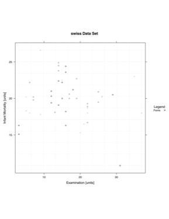

Example - Points
|  |
### Using a toy data set due to example data sets not having more than one Y variable #pdf(file="F:/Website/yyplot/lattice/latticeyy-points-large.pdf", width = 8.5, height = 11)
### Import Data
data <- swiss
# split.column <- NULL # |as.factor(criteria) was removed
data.to.plot <- list()
data.to.plot$x <- data[,"Examination"] #x
data.to.plot$y <- data[,"Infant.Mortality"] #y
# data is not being split
x.min.lim <- min(data.to.plot[["x"]])
x.max.lim <- max(data.to.plot[["x"]])
y.min.lim <- min(data.to.plot[["y"]])
y.max.lim <- max(data.to.plot[["y"]])
range.largest <- max(c(y.max.lim-y.min.lim),c(x.max.lim-x.min.lim))
data.to.plot$x.lim <- c(x.min.lim,x.max.lim)
data.to.plot$y.lim <- c(y.min.lim,y.max.lim)
bw <- FALSE
library(lattice)
### End Import### Panel Function
function.of.panel <- function(
x,
y,
data.to.plot.in.panel = data.to.plot,
black.and.white.in.panel = bw,
subscripts
){
cat("\n\n\nPacket", packet.number(),"\n")
#### Grid
plot.grid(
x.divisions = 10,
y.divisions = 10,
grid.color = "grey95",
x.limits = data.to.plot.in.panel[["x.lim"]],
y.limits = data.to.plot.in.panel[["y.lim"]]
)
### Plot Points
plot.points(
points.x = x,
points.y = y,
points.symbol = "o",
points.size = 1,
points.color = color.gen("black","grey75",3)
)
### ... More Panel Functions...
### Will be plotted in the order the functions are performed
}
### End Panel### Make Y~Y Plot
lat.yy <- xyplot(
y ~ x,
# Add '| as.factor(criteria)' if you would like to split the data
data = data.to.plot,
type = NULL,
# Taken Care of in Panel
aspect=1,
# X length is the same as the Y length. It produces a square box.
# aspect="iso",
# X units have the same length as Y units, does not mean aspect = 1.
# Most likely will produce a rectangular shape
xlab = "Examination [units]",
ylab = "Infant Mortality [units]",
xlim = c(x.min.lim - 0.03*(range.largest),x.max.lim + 0.03*(range.largest)),
ylim = c(y.min.lim - 0.03*(range.largest), y.max.lim + 0.03*(range.largest)),
main = "swiss Data Set",
panel = function.of.panel,
### Key contains suggested variations in a recommended plotting order
key = list(
title = "Legend",
text = list(
c("Points"),
col="black"
),
points = list(
col = c("black"),
pch = c(4),
cex = c(1)*0.75
),
type = "l",
space = "right",
cex.title = 1,
cex = 0.75
)
)### Change Color of Trellis Device and Plot Data trellis.device(color = !bw,new = FALSE,retain = FALSE)
### Plot Data print(lat.yy)
#dev.off()
{kind=link}